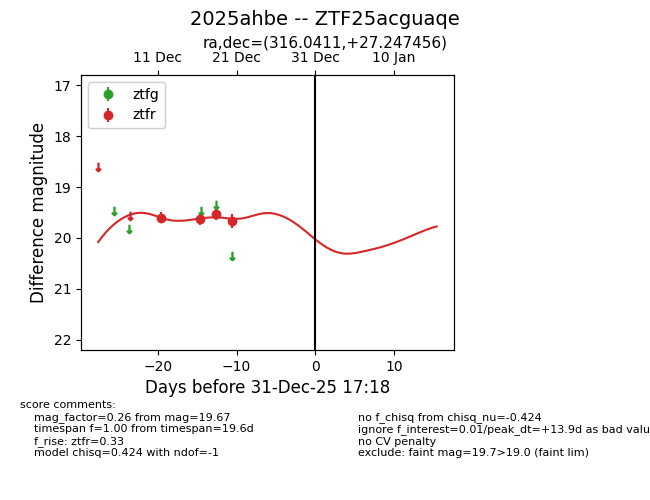
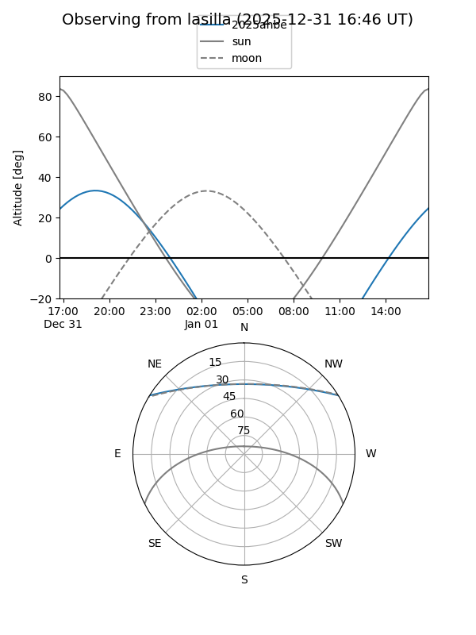
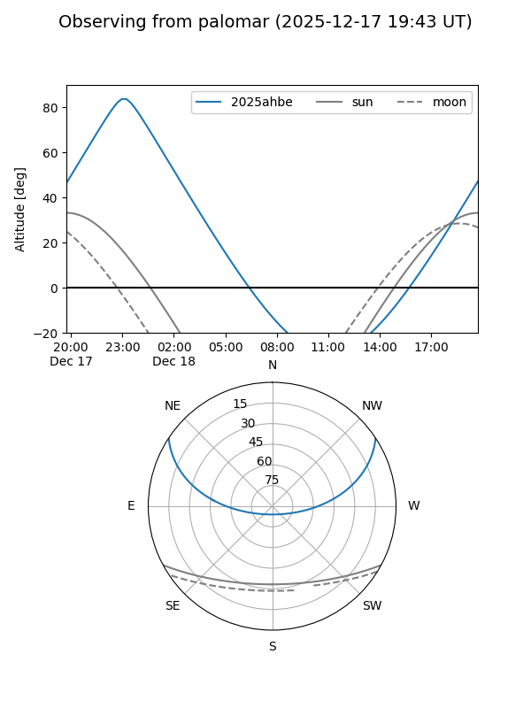

2025ahbe
Target 2025ahbe at 2026-01-09 12:49
Aliases and brokers:
FINK: link
Lasair: link
ALeRCE: link
TNS: link
YSE: link
alt names
ZTF25acguaqe (ztf,fink_ztf)
2025ahbe (tns,yse)
Coordinates:
equatorial (ra, dec) = 316.0411,+27.24746
equatorial (HMS+DMS) = 21:04:09.87,+27:14:50.84
galactic (l, b) = (73.1564,-12.96012)
Flags:
Photometry:
last ztfr=19.67
4 ztfr detections
Lightcurve

Visibility


Additional plots